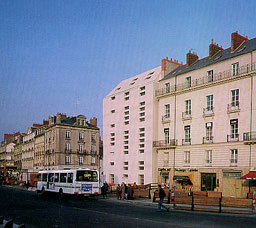
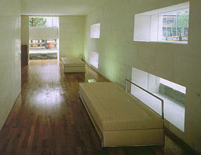
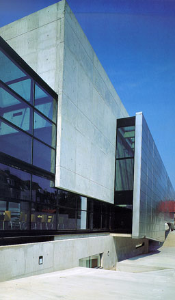
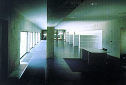

Hôtel La Pérouse, Nantes, France
Barto & Barto

New Hotel Designs
Telleri |
The hotel is situated in the heart of the city
of Nantes. It's a building without balconies, pipes and gutters
.The sloping roof is made of the same material as the facade.
There's no ornament at all. Windows are places in a horizontal
way. The position of the windows doesn't betray the number of
floors the building owns. On the photograph on the right the
entrance can be seen. The thick windowsills are illuminated by
direct daylight so the contrast between the windows and the wall
is divided in two steps. |
 |
AZL Headquarters, Heerlen, The Netherlands, 1991-1995
Wiel Arets

Contemporary European Architects; Volume V
Taschen |
The AZL Headquarters is a administration building
for 220 persons. The building made of concrete is plugged into
the existing brick buildings. The views and forms are strict
geometrically and controlled. On the photograph a piece of the
interior can be seen with windows connected to the floor. The
radiators are placed in the floor to prevent draught without
decreasing the connection with the outside.
|
 |